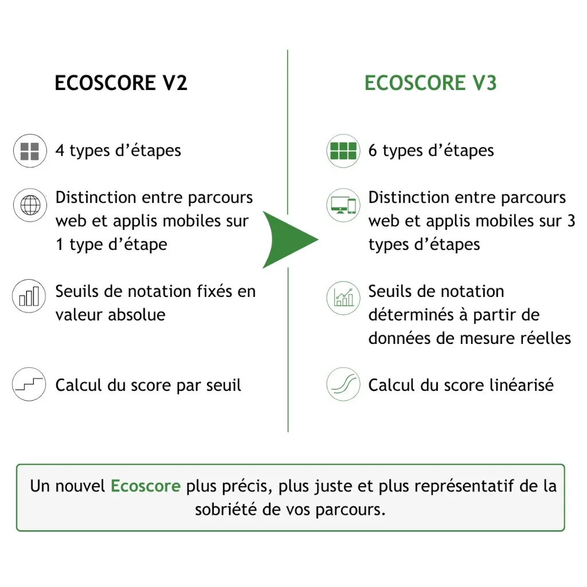

Dans un contexte où les entreprises doivent piloter leur sobriété numérique, les indicateurs Green IT constituent un outil d'évaluation nécessaire. L'Ecoscore Greenspector permet d'évaluer et de comparer la sobriété des parcours web et mobiles à partir de trois métriques mesurées sur terminaux réels. Greenspector déploie en 2026 la version 3 de cet indicateur : une évolution qui apporte quatre améliorations structurantes en termes de précision et de méthode de calcul.
L'Ecoscore Greenspector : rappel des fondamentaux
L'Ecoscore a été conçu pour fournir un indicateur de pilotage simple et représentatif de la sobriété d'un parcours utilisateur. En complément des métriques mesurées (consommation d'énergie en mAh, volume de données en Mo, temps de réponse en secondes), l'Ecoscore synthétise ces données en une note sur 100, sans unité. Plus le score est élevé, meilleure est la sobriété du parcours.
Cet indicateur repose sur l'analyse de trois métriques critiques mesurées tout au long d'un parcours utilisateur réel sur terminaux physiques :
Le temps d'affichage représente le temps nécessaire pour réaliser chaque étape du parcours. Plus une étape dure longtemps, plus son empreinte en ressources et en énergie est importante. Ce temps est également un facteur déterminant de satisfaction utilisateur, particulièrement sur des terminaux anciens ou peu puissants.
L'énergie mesure la vitesse de décharge de la batterie sur le terminal de l'utilisateur. Plus elle est élevée, moins l'étape est sobre. Cette métrique caractérise l'ensemble des sollicitations du terminal : puissance de calcul, traitements graphiques, appels aux capteurs. Elle est directement liée à l'autonomie quotidienne de la batterie, mais aussi à sa durée de vie : chaque milliampère-heure consommé accélère l'obsolescence du matériel.
Les données échangées correspondent aux volumes de données réseau montantes et descendantes requis pour le parcours. Elles caractérisent l'empreinte sur les infrastructures : plus les équipements actifs du réseau et les serveurs sont sollicités par des volumes importants, plus leur impact environnemental du numérique est significatif.
L'Ecoscore présente deux avantages majeurs : il est indépendant du nombre d'étapes du parcours testé, et indépendant de la technologie (natif, hybride, web), ce qui permet de comparer objectivement des parcours de natures différentes, en interne ou face à la concurrence.
Ecoscore V3 : les évolutions majeures

La version 3 de l'Ecoscore apporte quatre améliorations structurantes pour le rendre plus précis, plus juste et sans effets de seuil.
Deux nouveaux types d'étapes pour plus de précision
L'Ecoscore V2 distinguait quatre types d'étapes dans un parcours : les étapes de référence (terminal au repos), les pauses, les chargements, et les actions/scrolls regroupées ensemble. La V3 affine cette typologie en ajoutant deux nouveaux types d'étapes.
Premièrement, la notion de « premier chargement » fait son apparition. Ce nouveau type d'étape tient compte du fait qu'un premier chargement de page ou d'écran consomme généralement davantage de ressources qu'un chargement ultérieur, notamment en raison de l'absence de cache. Cette distinction permet d'évaluer plus justement les éléments de parcours que l'utilisateur découvre pour la première fois.
Deuxièmement, l'Ecoscore V3 distingue désormais le scroll des autres actions utilisateurs (saisie, swipe, clic). Le scroll, action fréquente et spécifique sur mobile, présente des caractéristiques de consommation différentes d'un clic ou d'une saisie de formulaire. Cette séparation permet une évaluation plus juste de la quantité de données téléchargées lors des scrolls (lazy loading).
Au final, l'Ecoscore V2 travaillait avec 4 types d'étapes (référence, pause, chargement, action/scroll). La V3 en compte 6 (référence, pause, premier chargement, chargement, action, scroll), offrant une granularité supérieure dans l'analyse des parcours.
Des seuils affinés entre web et mobile
Pour chaque type d'étape et chaque métrique, l'Ecoscore est défini par des seuils de valeurs, qui déterminent si une étape est « très bonne », « bonne », « acceptable » ou « insuffisante ». Ces seuils constituent le référentiel permettant d'attribuer une note.
L'Ecoscore V3 introduit une distinction systématique entre applications mobiles et parcours web pour les consommations de données. En effet, les volumes de données échangés diffèrent structurellement entre ces deux univers : une application native dispose souvent de ressources locales et communique via des API optimisées, tandis qu'un parcours web charge l'ensemble des ressources (HTML, CSS, JavaScript, images) à chaque visite. Cette différenciation permet d'évaluer chaque parcours selon des standards adaptés à sa nature technique.
Au total, le nombre de seuils double entre la V2 et la V3, apportant plus de finesse dans l'analyse selon le type d'étape, la métrique observée et la nature du parcours (web ou mobile).
Des seuils basés sur l'état de l'art
L'une des évolutions les plus structurantes de l'Ecoscore V3 réside dans la méthode de détermination des seuils. Jusqu'à présent, ces seuils étaient définis en valeur absolue, sur la base de l'expertise technique de Greenspector. La V3 adopte une approche statistique et empirique.
Les équipes de Greenspector ont analysé 600 000 points de mesure issus de parcours réels testés sur la plateforme. Pour chaque métrique et chaque type d'étape, cette base de données massive a permis d'identifier la distribution statistique des performances observées. Les seuils de la V3 sont désormais positionnés sur cette distribution : le seuil « très bon » correspond par exemple au 20e percentile, le seuil « bon » au 40e percentile, et ainsi de suite.
Cette méthode présente un double avantage. D'une part, elle garantit que les seuils reflètent l'état de l'art réel des applications et sites web en production. D'autre part, elle permet d'ajuster certains seuils à la hausse (pour des étapes où les pratiques se sont améliorées) et d'autres à la baisse (pour des étapes où les applications sont devenues plus gourmandes), offrant ainsi un référentiel plus juste et plus dynamique.
Calcul linéarisé : la fin des effets de seuil
Dans l'Ecoscore V2, chaque étape était affectée à une catégorie (très bonne, bonne, acceptable, insuffisante, très insuffisante) selon les seuils qu'elle respectait, et recevait une note discrète (100, 80, 60, 40 ou 20). Cette approche par paliers créait des effets de seuil : une étape consommant 169 µAh/s et une autre consommant 171 µAh/s pouvaient se retrouver dans des catégories différentes, avec un écart de 20 points, alors que leur différence réelle était minime.
L'Ecoscore V3 conserve l'affectation par catégorie pour la lisibilité, mais introduit un calcul linéarisé par interpolation. Concrètement, si une étape se situe entre deux seuils (par exemple entre « très bon » à 170 µAh/s et « bon » à 210 µAh/s), sa note n'est plus de 80 ou 60, mais une valeur interpolée entre ces deux paliers, proportionnelle à sa position exacte.
Une amélioration même marginale d'une métrique se traduit désormais par une amélioration visible du score, renforçant la pertinence de l'Ecoscore comme outil de pilotage de l'amélioration continue.
La transition vers la V3
L'Ecoscore V3 est disponible pour tous nos clients. Nous avons choisi une approche de transition progressive, conscient que ce changement de référentiel peut impacter les suivis en cours et les objectifs fixés par les équipes.
Concrètement, la V3 introduit une rupture de référentiel : il est impossible de comparer directement un score V2 avec un score V3, puisque les seuils, les types d'étapes et les méthodes de calcul ont évolué. Un parcours qui obtenait 65/100 en V2 peut obtenir un score différent en V3, à la hausse ou à la baisse selon ses caractéristiques.
Pour accompagner cette transition, nous avons intégré dans l'interface la possibilité de choisir la version de l'Ecoscore utilisée pour l'analyse. Les équipes peuvent ainsi continuer à suivre leurs indicateurs en V2 le temps nécessaire, tout en testant la V3 en parallèle. Cette flexibilité permet une adoption à votre rythme, sans rupture brutale dans les tableaux de bord des projets.
Et au-delà de cette version 3 ? Nous poursuivons d'amélioration continue. L'équipe R&D prévoit d'ajuster périodiquement les seuils en fonction des nouvelles mesures réalisées, afin de maintenir l'Ecoscore aligné sur l'état de l'art des pratiques de développement. D'autres évolutions méthodologiques sont également à l'étude pour renforcer encore la représentativité de cet indicateur central de la sobriété numérique.
Dans un contexte où la sobriété numérique en entreprise devient un impératif d'écoresponsabilité et de souveraineté, disposer d'un indicateur fiable et évolutif est essentiel. L'Ecoscore V3, fruit de 14 ans de R&D et de l'analyse de milliers de parcours utilisateurs réels, répond à cette exigence en permettant de mesurer, comparer et améliorer concrètement l'impact environnemental de son applicatif, parcours après parcours, sprint après sprint.